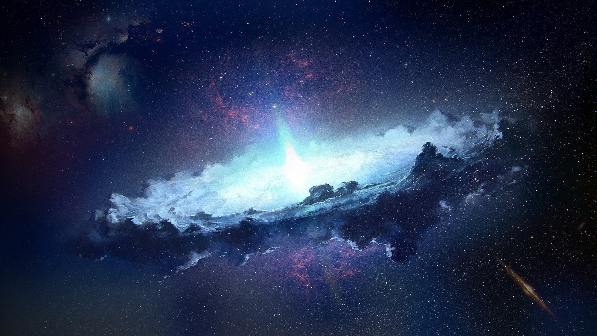

как дела привет меня зовут Егор мой тотемный овощь трасник я не давно закончил обучение:Дельфа получил разобрался в системе it обучения . шли мы как-то после мака и я купил лимоную воду я уже устал что-то писать но еще бы я хотел раскозать отом как очень я лююблю макороны ммммммммммммммммммммм как вкуснаа а теперь я раскажу про космос Окружающая Солнце область космического пространства, на которую распространяется солнечный ветер, называется гелиосферой. В пределах гелиосферы находятся орбиты всех известных планет Солнечной системы[8][Комм. 1]. Свободное от крупных плотных тел пространство гелиосферы заполнено так называемой межпланетной средой, а за гелиопаузой начинается область межзвёздной среды. Межпланетная среда сильно разрежена, но не является абсолютным вакуумом. Основную часть её вещества составляет плазма солнечного ветра (около 8 частиц на кубический сантиметр на уровне орбиты Земли), в небольших количествах присутствуют состоящие из нейтральных атомов и молекул газы. Её пронизывают космические лучи, магнитные поля и электромагнитные излучения солнечного и иного происхождения. К межпланетной среде относится также космическая пыль размером от 10−9 до 10−6 м, но не более крупные тела Солнечной системы[9]. В межпланетной среде путешествуют отправляемые с различными целями космические аппараты. По состоянию на 2023 год, только два аппарата серии «Вояджер» покинули гелиосферу в работоспособном состоянии и сообщили результаты непосредственных наблюдений межзвёздной среды. Низкая плотность вещества межпланетной среды делает её гораздо более удобным местом для астрономических наблюдений, чем поверхность окружённой плотной атмосферой Земли, поэтому космические телескопы позволяют получать особо ценные для науки сведения.
 Cылка 2 Wiki